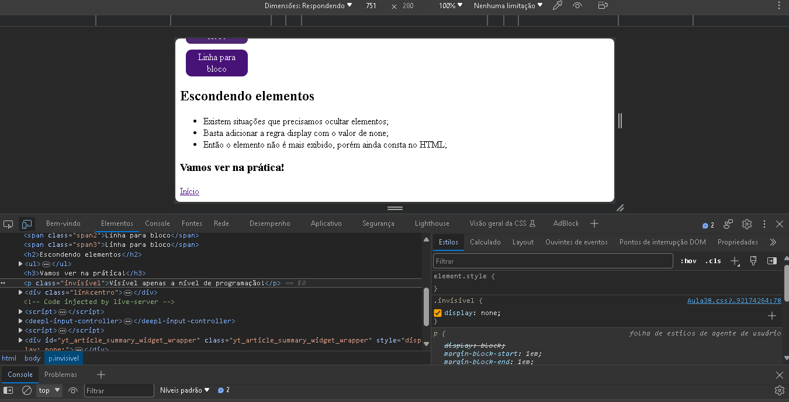
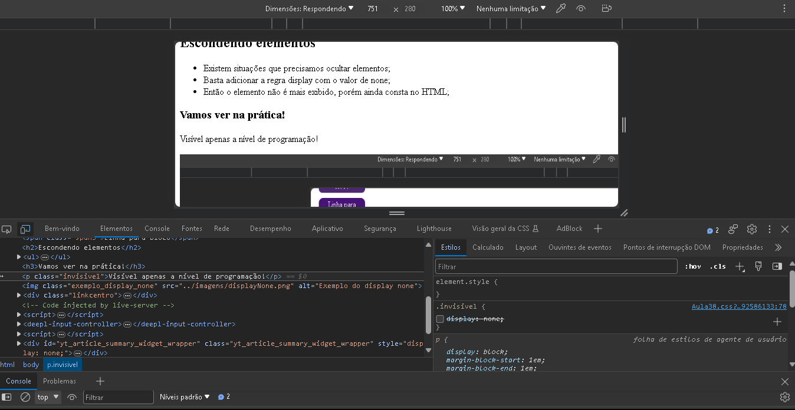

Display
-
Em HTML e CSS temos alguns elementos que são considerados de bloco e
outros inline;
- A tag div é um exemplo de block e span um exemplo de inline;
-
Com a regra display podemos mudar este comportamento, ou seja, deixar
uma div como inline;
Mudando as propriedades da tag div de bloco para linha. Vamos ver na
prática!
Mudando as propriedades da tag span de linha para bloco. Vamos ver na
prática!
Linha para bloco
Linha para bloco
Linha para bloco
Escondendo elementos
- Existem situações que precisamos ocultar elementos;
- Basta adicionar a regra display com o valor de none;
- Então o elemento não é mais exibido, porém ainda consta no HTML;
Vamos ver na prática!
Visível apenas a nível de programação!

